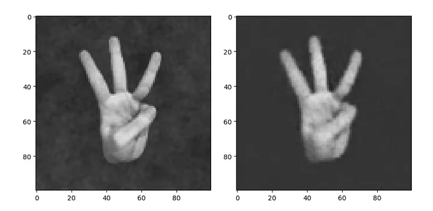

Hand Generator
This was a fun project that I worked on mainly during my junior year of high school. Having seen the problems that many modern diffusion models (DALLE, Stable Diffusion, and most recently Bing's AI Image Generator) had with generating realistic hands, I wanted to see if I could somehow replace them with hands specifically generated by a model trained for that task.
I've written about my process and other experiences in a medium article . Keep in mind, the purpose of this article was to provide a general understanding of how the algorithm functioned, not how all of the math worked.